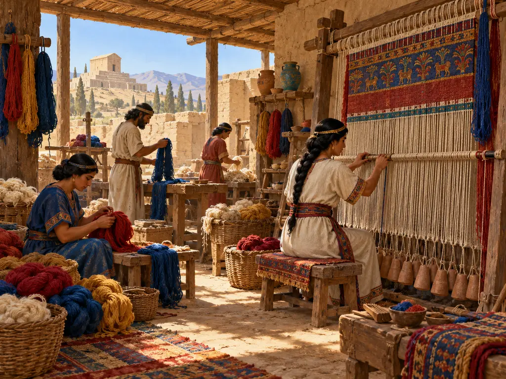
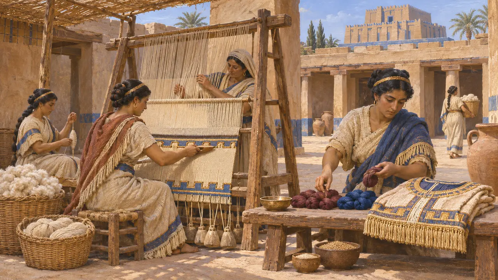
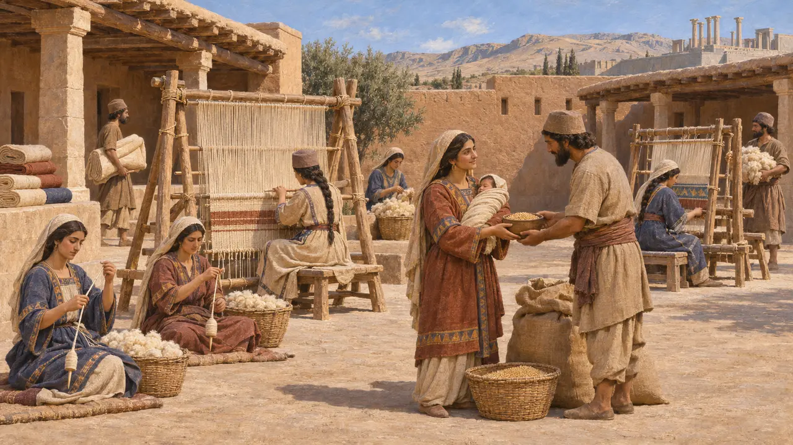
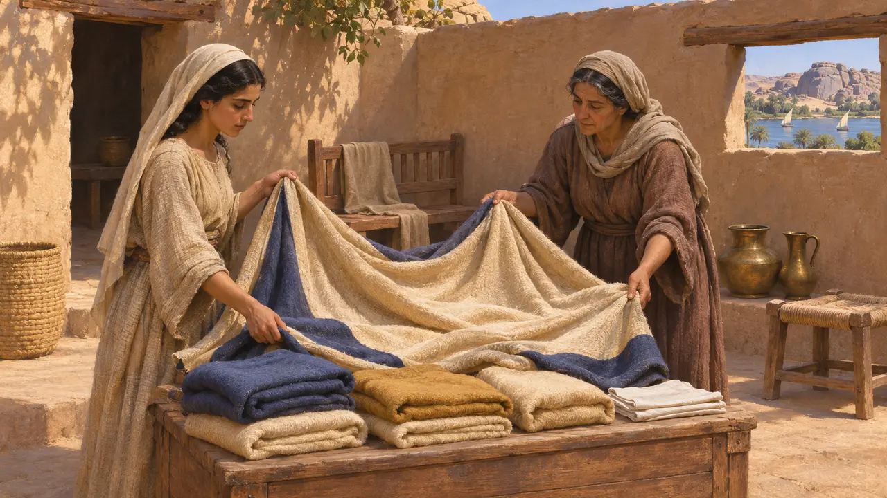
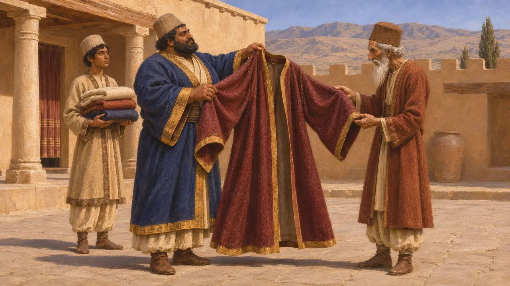

Atelier du tisserand
Filage et tissage de la laine et du lin dans l'Empire perse, vers 550-479 av. J.-C.
L'étoffe comptait parmi les biens les plus précieux du Proche-Orient ancien, et le filage comme le tissage occupaient une large part du travail ordinaire. Dans l'Empire achéménide, on tissait dans les foyers, dans les ateliers des temples et sur les domaines du Roi. Les beaux vêtements servaient de salaires, de dots, d'offrandes aux dieux et de présents que le Roi faisait aux hommes qu'il voulait honorer.
Dans le jeu : Dans le jeu, l'atelier file et tisse la laine en étoffe pour les Maisons de l'ancien. C'est une simplification : une grande partie des étoffes était en lin, surtout en Égypte, et l'essentiel du tissage se faisait dans les foyers, les temples et les domaines royaux, non dans des boutiques.

Laine, lin et teinture dans les temples
Dans les sourcesLes archives des temples babyloniens du VIe siècle, celles de l'Ebabbar de Sippar et de l'Eanna d'Uruk, mentionnent des tisserands payés en rations et pourvus de laine, de lin et de fil teint. Ils confectionnaient les vêtements des statues des dieux, que l'on habillait de neuf lors de fêtes déterminées. La laine teinte en rouge pourpre et en bleu était coûteuse et soigneusement comptée. Ces registres se poursuivirent sous la domination perse, après la prise de Babylone par Cyrus en 539 av. J.-C.
S. Zawadzki, Garments of the Gods, 2006; P.-A. Beaulieu, The Pantheon of Uruk during the Neo-Babylonian Period, 2003

Les travailleurs des domaines du Roi
ContestéLes tablettes des Fortifications de Persépolis, datées d'environ 509 av. J.-C. à 494 av. J.-C., consignent les rations de grands groupes de travailleurs, hommes et femmes, sur les domaines royaux de Perside. Certains groupes féminins sont appelés pashap, un mot que plusieurs spécialistes rattachent à la confection de vêtements, bien que son sens exact reste débattu. Dans ces groupes, les mères recevaient des rations supplémentaires après l'accouchement, ce qui montre que les femmes faisaient durablement partie de la main-d'œuvre.
M. Brosius, Women in Ancient Persia, 1996; P. Briant, From Cyrus to Alexander, 2002

L'étoffe, richesse du foyer
Dans les sourcesDes papyrus araméens de la garnison juive d'Éléphantine, en Égypte, mentionnent des vêtements dans la dot d'une mariée, chacun estimé en argent. Le contrat de mariage de Mibtahiah et d'Eshor fut rédigé au milieu du Ve siècle, peu après la période du jeu. Il cite plusieurs vêtements, en laine pour la plupart, à côté de vases de bronze et de meubles. Les vêtements étaient traités comme des biens dignes d'être consignés, au même titre que tout autre objet de valeur.
Elephantine papyri, marriage contract of Mibtahiah (TAD B2.6)

Robes offertes par le Roi
Récit antiqueHérodote rapporte que les Perses adoptèrent le costume mède, et que la famille d'Otanès recevait chaque année du Roi une robe mède en signe d'honneur. Il raconte aussi que Cambyse envoya un manteau de pourpre parmi ses présents au roi d'Éthiopie. Il décrit les Babyloniens vêtus d'une tunique de lin tombant jusqu'aux pieds, d'une tunique de laine par-dessus et d'un manteau blanc, ce qui montre les deux fibres en usage quotidien.
Herodotus 1.135; Herodotus 3.84; Herodotus 3.20; Herodotus 1.195
Sources
- P. Briant, From Cyrus to Alexander, 2002
- S. Zawadzki, Garments of the Gods, 2006
- M. Brosius, Women in Ancient Persia, 1996
- Herodotus 1.135, 1.195, 3.20, 3.84
- Elephantine papyri, marriage contract of Mibtahiah (TAD B2.6)
- P.-A. Beaulieu, The Pantheon of Uruk during the Neo-Babylonian Period, 2003